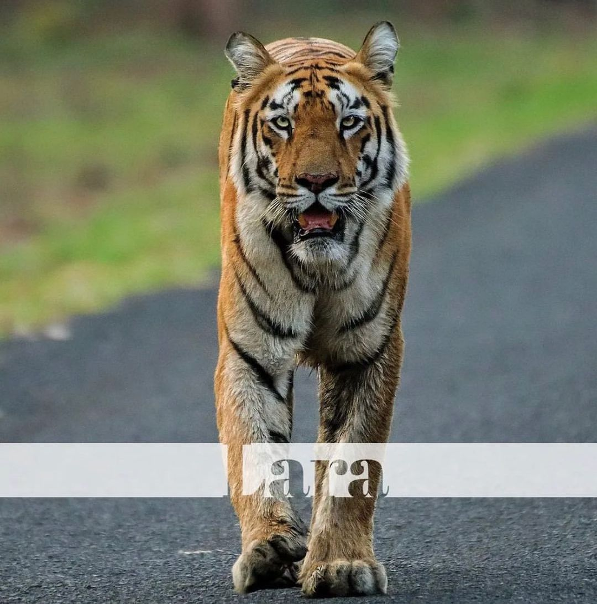
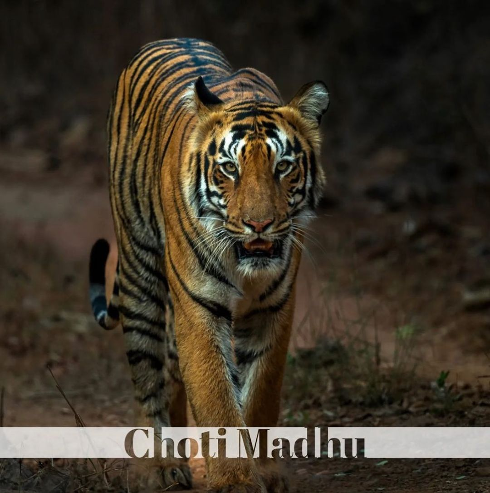
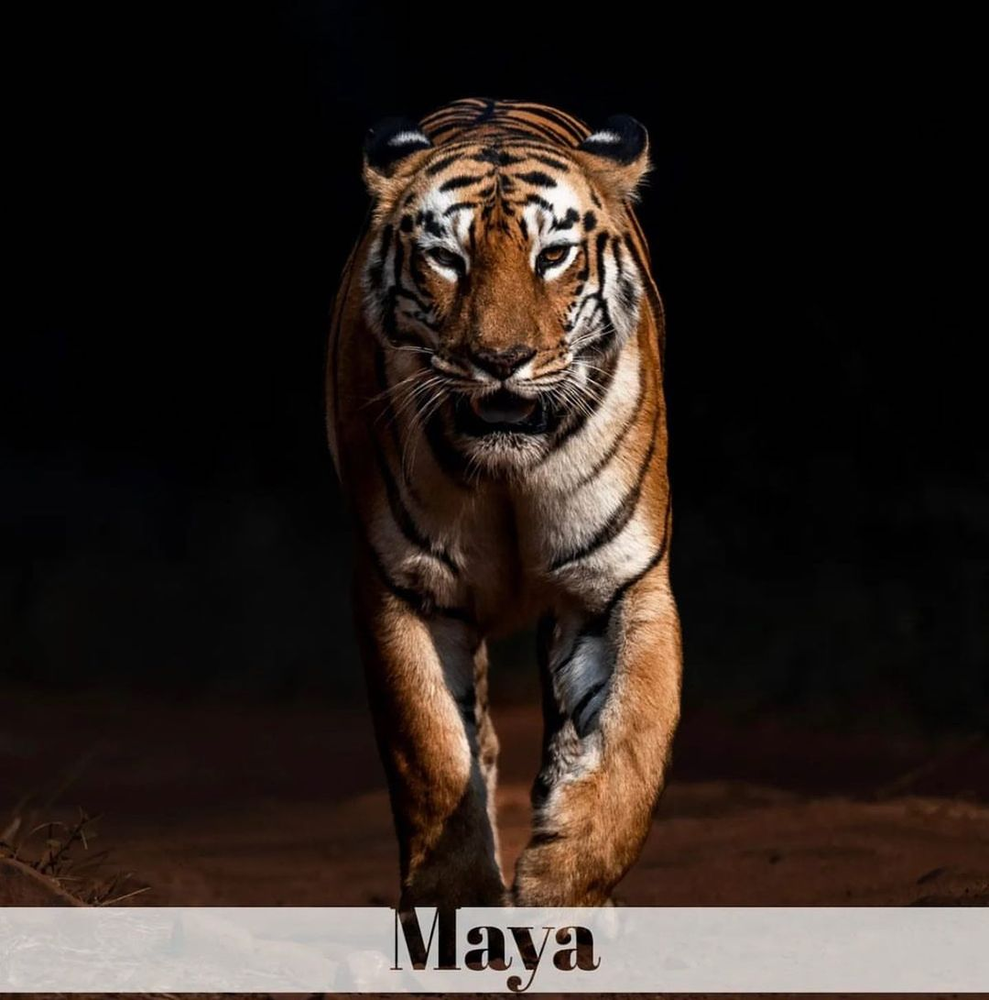
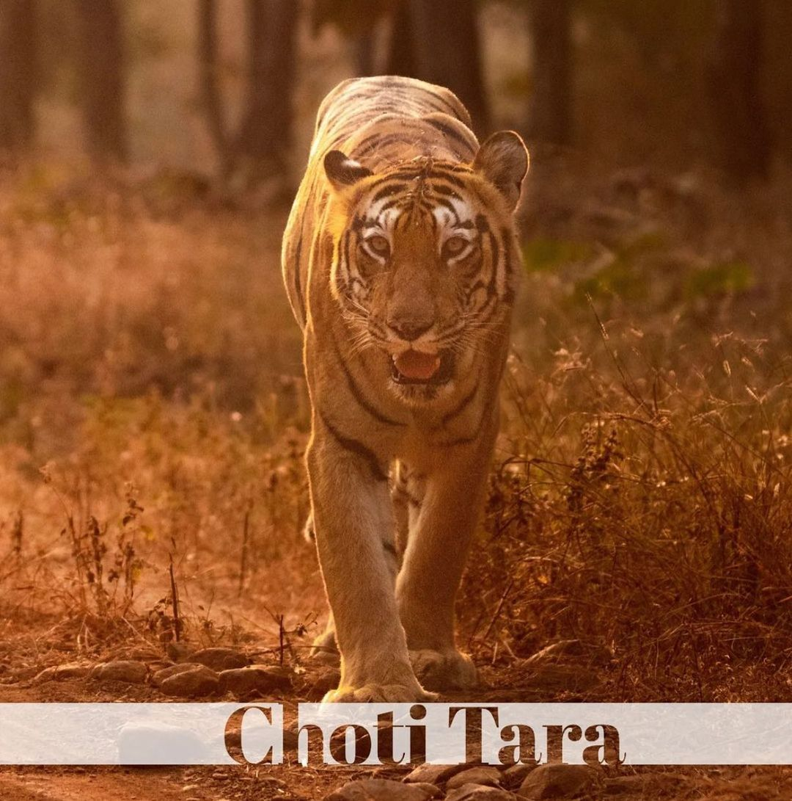
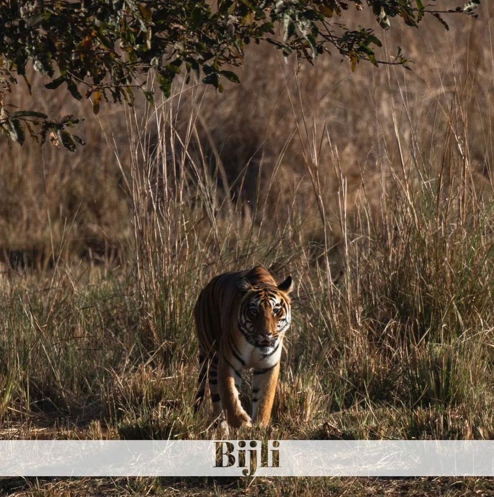
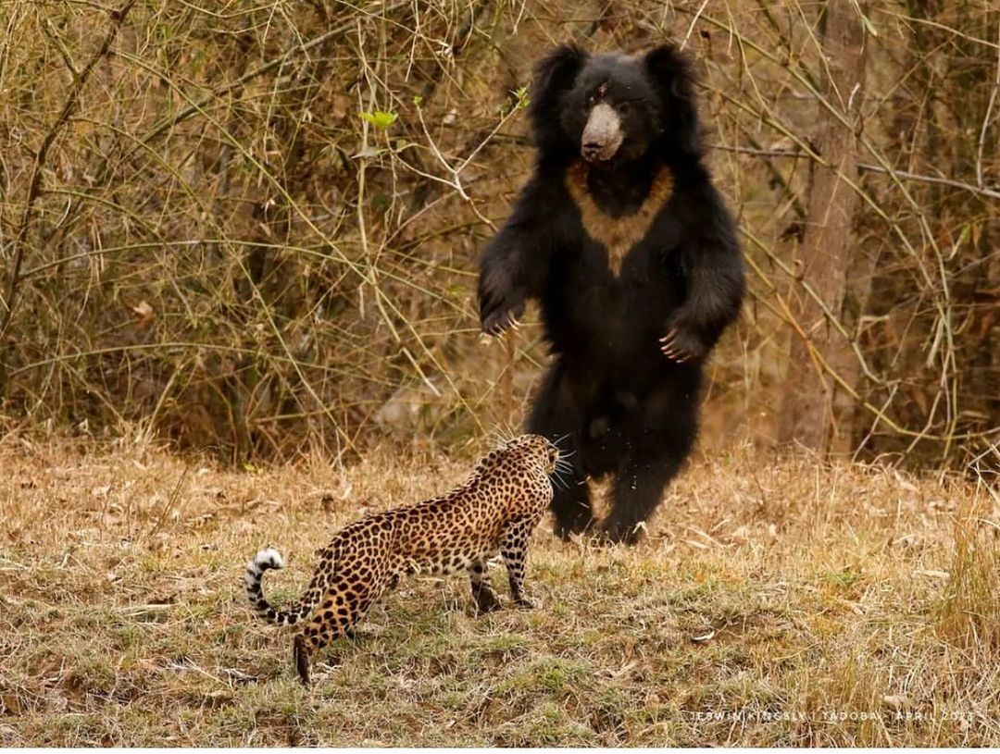

Andhari Tiger Reserve
Tadoba Andhari National Park
Notably Maharashtra's oldest and largest National Park, the "Tadoba National Park", also known as the "Tadoba Andhari Tiger Reserve" is one of India's 47 project tiger reserves existing in India. It lies in the Chandrapur district of Maharashtra state and is approximately 150 km from Nagpur city. The total area of the tiger reserve is 1,727 Sq.km, which includes the Tadoba National Park, created in the year 1955. The Andhari Wildlife Sanctuary was formed in the year 1986 and was amalgamated with the park in 1995 to establish the present Tadoba Andheri Tiger Reserve. The word 'Tadoba' is derived from the name of God "Tadoba" or "Taru," which is praised by local tribal people of this region and "Andhari" is derived from the name of Andhari river that flows in this area.
About
The Tadoba National Park is divided into three separate forest ranges, i.e. Tadoba north range, Kolsa south range, and Morhurli range, which is sandwiched in between the first two. There are two lakes and one river in the park, which gets filled every monsoon, the ‘Tadoba Lake,’ ‘Kolsa Lake,’ and ‘Tadoba River.’ These lakes and rivers provide vital ingredients needed to sustain the park’s life.
The Tadoba Tiger Reserve is rich in flora and fauna. Some of the famous and wildly seen flora of this park include, Teak, Ain, Bija, Dhauda, Hald, Salai, Semal, Tendu, Beheda, Hirda, Karaya gum, Mahua Madhuca, Arjun, Bamboo, Bheria, Black Plum, and many others. Apart from this the list of animals noted in this part include, Tigers, Indian leopards, Sloth bears, Gaur, Nilgai, Dhole, Striped Hyena, Small Indian Civet, Jungle Cats, Sambar, Spotted Deer, Barking Deer, Chital, Marsh Crocodile, Indian Python, Indian Cobra, Grey-headed Fish Eagle, Crested Serpent Eagle, Peacock, Jewel Beetles, Wolf Spiders, etc.
Photos of Tadoba








Wildlife Resorts in Tadoba
- Svasara Jungle Lodge
- Tiger Trails Jungle Lodge
- Camp Serai Tiger
- Irai Safari Retreat
- Tiger Heaven Resort
- Tadoba Tiger King Resort
Tadoba Tour Packages
Tadoba Safari Information
- Safari Timings of Tadoba
- Safari Zones in Tadoba
- Tadoba Safari Bookings
- Jeep Safari In Tadoba
- Entry Gates for Safari In Tadoba